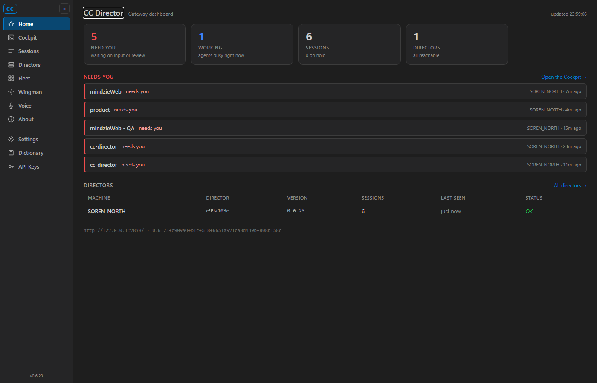
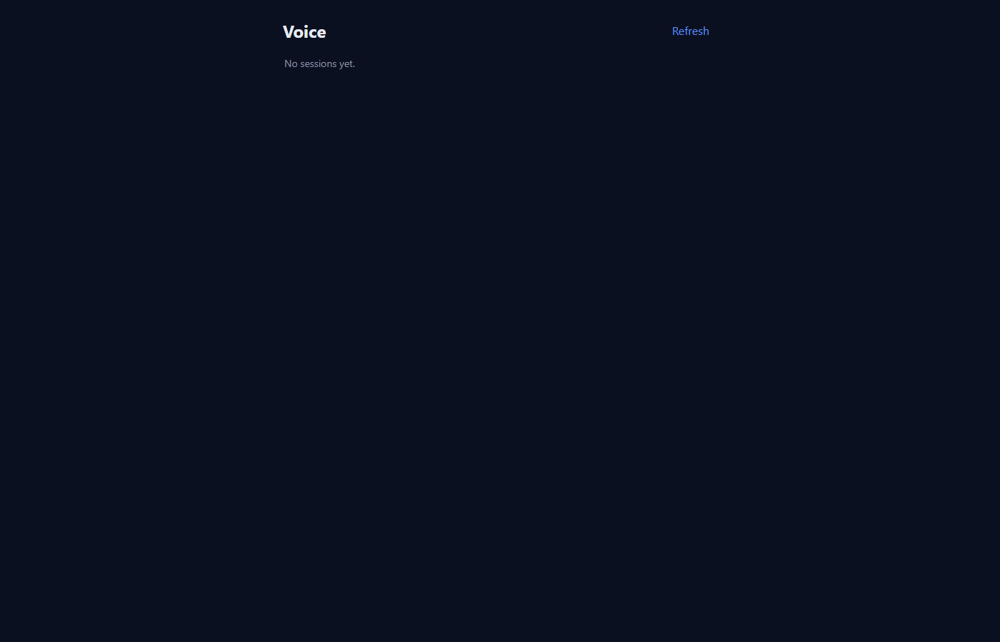
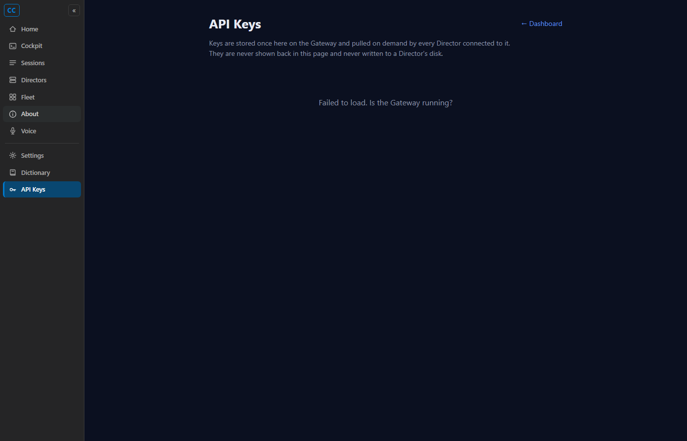

Developer Agent proof | branch feat/420-voice-nav | CenCon Development Method
The mobile-first Voice Mode page (/voice) was reachable only by typing the URL. A
"Voice" navigation entry was added so it is discoverable and openable from the Cockpit.
src/CcDirector.Cockpit/Components/Layout/NavMenu.razor - added a visible "Voice"
item linking to /voice (a plain anchor with data-enhance-nav="false"
because /voice is served outside the Blazor router as a static PWA, so it needs a
full document load - matching the existing /settings and /keys
anchors). Icon is a 16x16 microphone/headset SVG consistent with the sibling
nv-item entries./transcripts (the recordings + transcripts page) was renamed from "Voice" to
"Recordings" in both surfaces - its purpose is recordings, and the new /voice
item now owns the "Voice" label.src/CcDirector.Cockpit/wwwroot/pages/tool-nav.js - added the same "Voice" item to
the shared static tool-nav rail (so the plain-HTML tool pages show it too) and renamed the
/transcripts entry to "Recordings", keeping the two rails in sync as the file's
own comment requires.Cockpit web dashboard. Followed the existing NavMenu.razor / tool-nav.js
conventions: nv-item anchor pattern, 16x16 viewBox stroke-only SVG icon,
and the same separator/visibility structure as siblings. No hard-coded colours; reuses the
existing .nv-* design tokens.
dotnet build cc-director.sln -> Build succeeded. 0 Warning(s), 0 Error(s).
| Criterion | Expected | Actual (proof) | |
|---|---|---|---|
| Nav rail shows a "Voice" item with a sensible icon, consistent with other entries | "Voice" item visible in the Cockpit left rail with a microphone icon | Screenshot 01: "Voice" item present between "Wingman" and "About", microphone icon,
matching sibling styling. Selector check: NAV_VOICE_LABEL = "Voice" |
PASS |
Clicking it navigates to /voice and the Voice page renders (session list visible) |
Click -> URL /voice, Voice page renders with its session list |
Screenshot 02: after click, AFTER_CLICK_URL = http://127.0.0.1:7492/voice,
PAGE_TITLE = "Voice - CC Director"; the Voice heading and session-list region
render ("No sessions yet." in this standalone Cockpit with no live Director sessions) |
PASS |
The item also appears in the shared static tool-nav rail (tool-nav.js) |
Static tool pages show the "Voice" item too | Screenshot 03 (static /keys page): injected rail shows "Voice" with the same
icon. Selector check: TOOLNAV_VOICE_LABEL = "Voice" |
PASS |

/transcripts entry is now "Recordings".
/voice; the Voice Mode page
renders (heading, Refresh, session list region).
/keys): the shared tool-nav rail also shows the
"Voice" item.No drift. This is a navigation-only Cockpit UI change - no architecture container, data flow, or
security boundary changes. No docs/cencon/ manifest or security_profile update
required.
The Cockpit's home/nav is an InteractiveServerRenderMode(prerender: false) Blazor
surface, so the nav only exists after the SignalR circuit connects in a real browser. Proof was
captured by running the built cc-director-cockpit.dll standalone on a spare port
(7492) and driving it with Playwright (local-only page, no bot detection), waiting for the circuit
to hydrate before asserting. The test instance was torn down after capture.